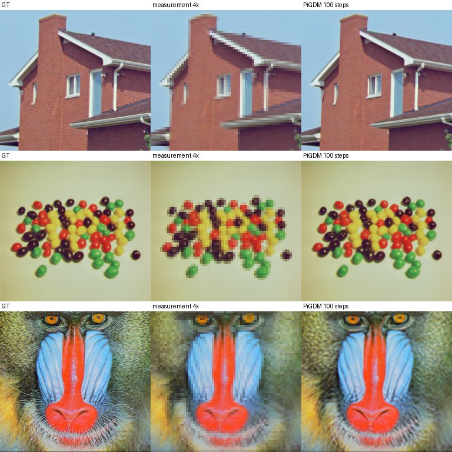
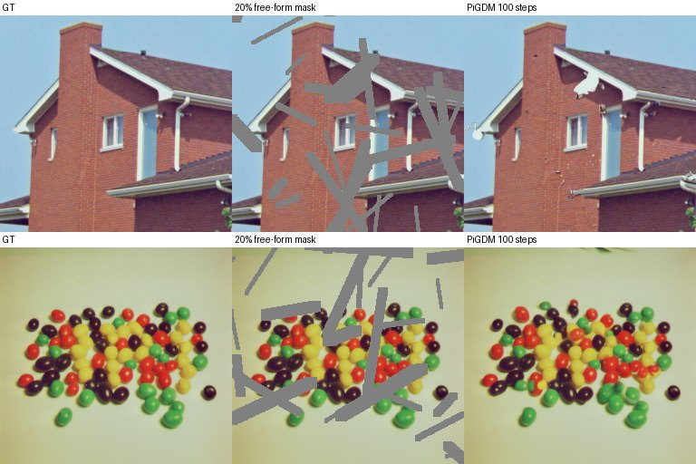

INFERENCE WALKTHROUGH / NOT A REPRODUCTION
管线通了，
但掩码极性差点把任务做反。
ΠGDM 没有作者官方实现，改用同实验室 NVlabs/RED-diff 里的 algo=pgdm 基线：6 张 256×256 分布外自然图，ADM 无条件 ImageNet 权重，100 步、η=1.0、σ_y=0。4× 平均池化超分 26.90 dB，20% free-form 修复 24.04 dB。掩码是自造的（仓库不含 Palette 掩码），第一次写反了极性只出 13.57 dB，纠正后才有 24.04 dB —— 这条比数字本身重要。
algo=pgdm）跑了什么
论文只声明了一个项目页（现为 404），没有发布实现；同一实验室公开的 RED-diff 代码库里带了一个 algo=pgdm 的基线配置，本页用它来验证 ΠGDM 的更新式（伪逆残差 × 雅可比回传）能否跑通。数据用 jiamings/ddrm-exp-datasets 的 6 张 OOD 图（与 DDRM 走查同一组，便于横向看），按本仓库的 ImageNet 目录格式放好；没有下 ImageNet val 全集。
两个任务：4× 平均池化超分（σ_y=0）、20% free-form 修复（σ_y=0）。步数 100（论文设置），η=1.0（README 的 pgdm 示例值，也是论文正文的 DDIM 设置），awd=True、grad_term_weight=1。
环境与改动
环境 Python 3.10 + torch 2.1.2+cu118 + torchvision 0.16.2 + numpy 1.24.4，另装 hydra-core/omegaconf/einops/kornia/clean-fid/torchmetrics/opencv。踩过两个坑：numpy 2.2 会让 torch 2.1 报 _ARRAY_API not found，降到 1.24.4；最新 transformers 只是打印「Disabling PyTorch」，本仓库不用它，不影响。权重为 openaipublic 的 256x256_diffusion_uncond.pt，软链到代码期望的 <exp.root>/ckpts/imagenet/。
代码改动一处：code/datasets/imagenet.py 读取 meta.bin 的 try/except 加第三层回退，直接 torch.load 本地手写 meta（torchvision 0.16 的 load_meta_file 会做 md5 校验，没有官方 devkit 必然失败）。算法与 algo/pgdm.yaml 未改。
掩码极性（重要）：仓库不带 Palette 的 free-form 掩码，本次按「20% free-form」自造 20ff.npz（m 为 packbits、shape=(1000,3,256,256)）。第一次按「1=缺失」写，而 Inpainting2 把 singulars()=mask 当观测（1=保留），于是模型只保留 20%、把 80% 当缺失，任务整个反了，只出 13.57 dB；把掩码取反（1=保留 79.5%）后重跑得 24.04 dB。将来换 Palette 官方掩码必须核同一极性。
结果
| 任务 | 步数 | η | σ_y | 平均 PSNR（6 张） | 输出 |
|---|---|---|---|---|---|
| 4× 平均池化超分 | 100 | 1.0 | 0 | 26.90 dB | data/exp/samples/pgdm_sr4/n01440764/ |
| 20% free-form 修复 | 100 | 1.0 | 0 | 24.04 dB | data/exp/samples/pgdm_in2_20ff/n01440764/ |
每个任务目录保存 {name}.png（复原）、{name}_deg.png（退化观测）、{name}_ori.png（原图）。6 张一批：SR 约 3.6 min、修复约 3.0 min（与 DAPS 共用一张卡时），24 GB 单卡可容纳。
小样本推理走查（6 张，非论文 1k 张），数值不等同论文指标。定性：SR 输出清晰、无棋盘伪影；修复区纹理合理，掩码边缘有轻微拼缝（论文同类现象）。
样例


没跑的部分与局限
- 实现不是作者的：
algo=pgdm是第三方基线实现，不能保证与论文式 7–11 完全逐行一致；只能验证算法骨架。 - 没有全量指标：未用 ImageNet 1k、未算 FID/CA，未跑 Center mask、JPEG 三个 QF、复合算子。
- 掩码是自造的：Palette 官方掩码未公开直链，本次的 20% 随机笔画只是形态近似，覆盖面统计与论文不同。
- η 的口径需注意：
_configs/algo/pgdm.yaml默认eta: 0.0，README 的 pgdm 示例用eta: 1.0；本次按 README（也是论文正文的 DDIM 设置）取 1.0。 - 没有对照组：未跑 DPS/DDRM/RED-diff 的同数据对照，不能判断相对优劣。
文件位置
| 路径 | 内容 |
|---|---|
/data1/kxchen/infer-repro/pigdm/code | RED-diff @ 66482f2 + 一处 meta 读取回退 |
.../pigdm/data/exp/masks/20ff.npz | 自造 20% free-form 掩码（1=保留） |
.../pigdm/data/exp/samples/ | 两个任务的复原 / 观测 / 原图 |
.../pigdm/logs/ | sr4.log、in2_20ff.log |
.../pigdm/RECORD.md | 实验记录与数字出处 |
来源
- 论文（OpenReview，ICLR 2023）；无 arXiv 版本，会议 PDF 见作者主页。
- 实现：NVlabs/RED-diff（
algo=pgdm）；权重为 OpenAI guided-diffusion 的256x256_diffusion_uncond.pt。 - 本页数字来自服务器脚本自算的 6 张平均 PSNR（
logs/*.log），样例图由输出目录 PNG 直接拼接。